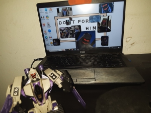

The personal bio of Nune/Gigirassy.
Hello. I am Nune (nu-neh). My pronouns are ey/em, I have professionally diagnosed brainrot of all sorts (so please be nice), and am quite silly. I am also an anarchist. The world's cutest, in fact. This is a subsection of my site for my Discord bio.
- 18-year-old
- I'm a white-coded and passing Native. (Lenape and Myaamia)
- I'm as emotionally fragile as a roll of tissue paper due to my traumas and brainrot.
- Cassgender and Autigender.
- I am known for my hot takes, adorableness, and milk lore. Also my art style, gardening, and activism. I semi-frequently talk about current events, let me know if that makes you uncomfortable.
- This is written in a proper grammar style, but please know that on Discord, I use loads of emotes and shorthands.
- If I left your OSC-related server recently, please don't worry! I have decided to distance myself from the OSC due to mental health reasons. I'm still friends with OSC friends; I just won't be in the community itself! You should watch Transformers Animated instead, it's way cooler.

This image should tell you a lot about me.